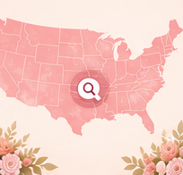
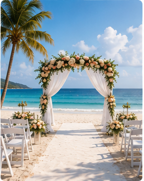
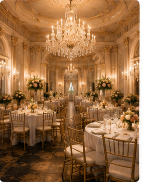
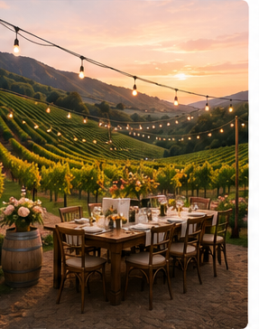
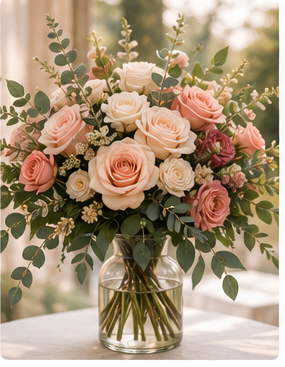

Your Personal Wedding Planner
From “Yes!” to “I Do,” Wendy helps couples plan every detail with confidence, clarity, and support — every step of the way.
Stay Organized
Checklists, timelines, and reminders keep everything on track.
Plan Anywhere
Access your plan, guest list, and budget from any device.
Track The Details
Keep every detail in one place so nothing gets missed.
Feel Confident
Expert guidance and local insights help you plan with peace of mind.
Start with your city.
Every wedding starts somewhere. Choose your state, then let Wendy help you plan around local license steps, venue flow, guest logistics, registry needs, and the moments that matter.
Florida
Beachfront vows, resort celebrations, and warm-weather weddings with effortless guest flow.
New York
Iconic venues, unforgettable views, and wedding days with classic city energy.
California
Coastal sunsets, wine country settings, and relaxed luxury for memorable celebrations.
Texas
Big skies, warm welcomes, polished city venues, and rustic-luxe celebrations.
Pennsylvania
Historic charm, garden estates, riverfront settings, and timeless local weddings.

All States
Explore city wedding planning pages across the Marriage In My City network.
Plan with guides that actually help.
Plain-English wedding planning support built around decisions couples actually have to make.

Marriage License
Understand the license path before you start booking around assumptions.

Venue Booking
Compare the style, guest flow, and timing questions that matter most.

Wedding Budget
Plan smart, prioritize what matters, and leave room to flex.

Registry
Build a registry that supports your wedding and newlywed life.

Timeline
Stay on track with a planning rhythm that keeps the day calm.

Newlywed Planning
Let your Bridal Blueprint become your Marriage Blueprint.
Venue styles Wendy can help you compare.
Use these as your starting lanes: the setting, guest flow, weather plan, and timeline all change based on venue type.

Beach & Waterfront
Coastal ceremonies, resort lawns, and sunset views.

Ballrooms
Classic reception spaces with polished service flow.
Estates & Gardens
Elegant grounds, timeless photos, and privacy.

Vineyards
Wine-country views and romantic outdoor dinners.

Barn & Rustic
Warm, personal, countryside celebration settings.
Vendor categories worth organizing early.
Wendy helps you think through the people, services, and details that shape the day.

Photographers
Capture the story without missing the details.

Florists
Flowers that set the tone from aisle to tables.
DJs & Music
Keep the celebration moving with the right energy.
Planners
Local help for timing, budget, and vendor coordination.
Beauty
Hair, makeup, and getting-ready confidence.
Limousine Services
Arrivals, exits, guest shuttles, and calm transportation timing.
Before & After I Do
Wendy also helps organize the celebrations and trips surrounding the wedding day.
Bachelor Parties
Plan the celebration without losing sight of budget and timing.

Bachelorette Parties
Make it personal, polished, and manageable for the group.
Bridal Showers
Coordinate hosts, gifts, food, and the emotional feel of the room.

Honeymoons
Plan the first trip after the wedding with real-life logistics.
Your wedding plan should become the first chapter of married life.
Registry, home setup, travel, name-change reminders, local services, and next-step planning can all build from the same place.